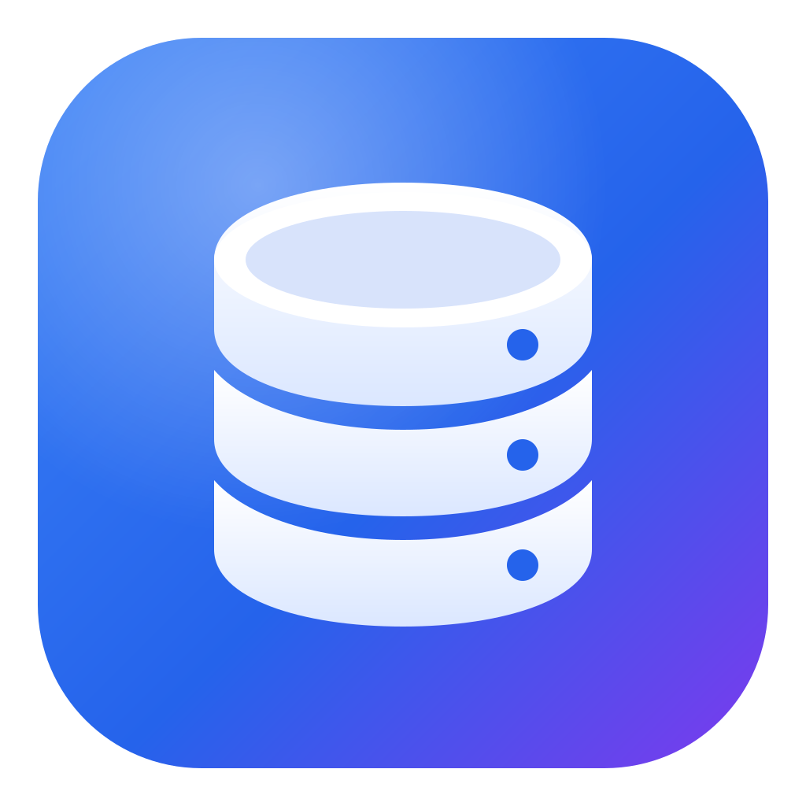

Native speed
Rust core, streams tens of thousands of rows in milliseconds. Starts instantly, about 5 MB to download.

DB Client BETAOpen source · Free · Built with Rust + Tauri
A fast, native desktop client for PostgreSQL and MySQL. Query, edit, import and keep an eye on your servers without the clutter.
Built for the daily work with real databases: from a quick SELECT to a 300 MB dump on a production server.
Rust core, streams tens of thousands of rows in milliseconds. Starts instantly, about 5 MB to download.
Monaco editor with autocomplete for tables, columns and aliases. Run a statement, a selection or the whole script.
Excel-like selection, typed cells, JSON viewer, date pickers. Edits are saved in a single transaction.
Reach private databases through a bastion. Host keys are pinned and passwords live in the OS keychain.
Mark connections as PROD and every write asks for confirmation first. Colored everywhere so you always know where you are.
Load SQL dumps, CSV, Excel and JSON, or back up a whole database to one .sql.gz file. Several connections at once, in the background.
Columns, indexes and foreign keys with an ALTER preview before anything touches the server.
Create users and roles, grant access to a database, a schema or a single view. See the SQL before applying.
Live sessions and running queries, lock waits and who blocks whom. Cancel a query or kill a connection.
See every table and relationship of a schema, arrange it, and export one HTML file with the diagram and full table docs for your team.
Brings your connections over from DBeaver, pgAdmin, MySQL Workbench, Sequel Ace and .pgpass, with SSH tunnels, folders and saved passwords.
Windows, macOS and Linux, on Intel and ARM. The app updates itself and tells you what's new.
DB Client works over several connections at once: dumps are split and loaded in parallel, backups read many tables (big ones in ranges) from the same snapshot.
2.9 million rows, 4 connections. CSV with 1 million rows: 0.63 s into PostgreSQL.
3.2 million rows to one .sql file, 4 connections. Compressed .sql.gz: 1.3 s for both.
Local tests, same machine and server for every tool.
Free and open source (MIT). Installs for your user only, no admin rights needed, and updates itself.
The installers aren't code-signed yet. Windows: if SmartScreen warns, click More info → Run anyway. macOS: open the app once, then System Settings → Privacy & Security → Open Anyway. Linux: make the AppImage executable (chmod +x) and run it.